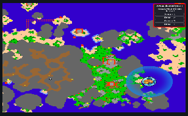

Wędkarstwo pozwala łowić różne potwory morskie i daje szansę na zdobycie rzadkich bossów.
Obszary są dynamiczne (aktywne losowo przez 2–4 godziny). Aby je znaleźć:

| Poziom | Potwory | Boss |
|---|---|---|
| 0–24 | Fish, Crocodile, Bluish Crab, Desert Crab, Sea Crab | Oceanus Shenron |
| 25–50 | Acqua, Akkuman | Oceanus Shenron |
| 51–70 | Acqua, Lobstron, Crustacor, Akkuman | King Crab |
| 71–80 | Polvoraith, Lobstron, Crustacor | King Crab |
| 81–100 | Polvoraith, Lobstron, Giant Crab | King Crab |
Ważne Uwagi:
- Złowione potwory znikają po 30 sekundach – bądź szybki!
- Umiejętność Wędkowania rośnie automatycznie podczas łowienia.
- Może istnieć do 4 aktywnych obszarów jednocześnie.